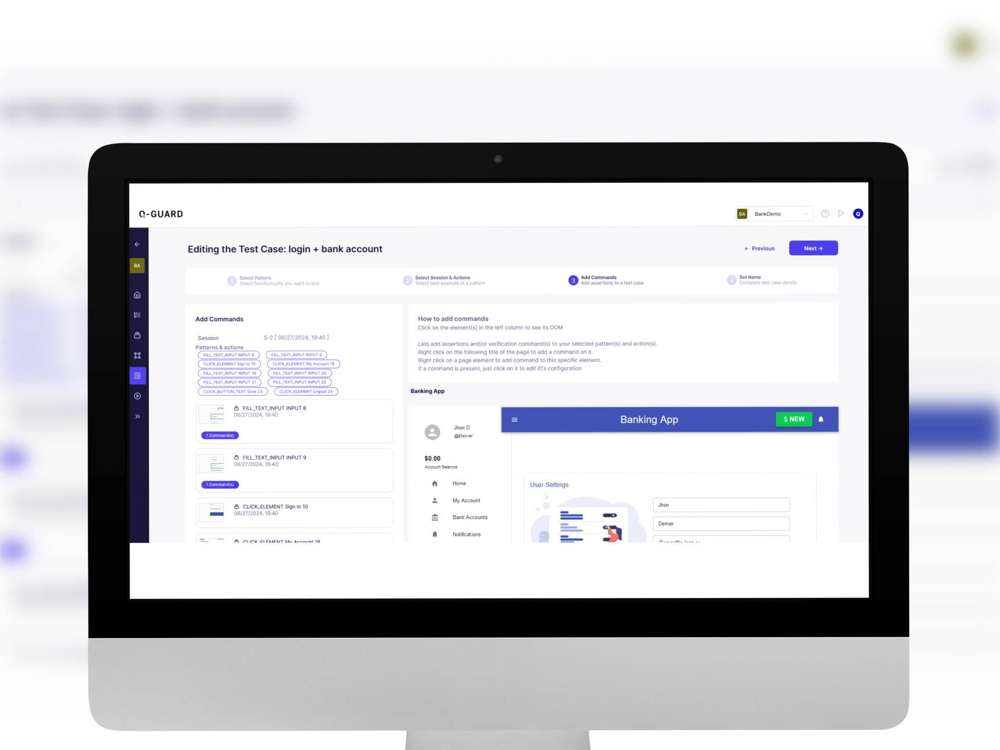

Q-Guard: A powerful tool for comprehensive and effortless test coverage based on actual user behaviors.
Get Startedpowerful Q-GUARD
Streamline end-to-end test script creation by 90% and generate tests for critical user journeys in just a few clicks. Q-Guard automatically tracks how users interact with your website or web application.

for all testers
Whether you're a manual tester, lead, or automation engineer, reduce your test case design time, create realistic regression test scenarios based on real user experiences, automate them effortlessly without coding, and minimize test automation maintenance.
What Q-GUARD DO
Discover your application's use cases through user behavior analysis and automatically generate your tests.
Q-Guard captures user behavior across multiple application environments (production/test) without impacting application performance.
Q-Guard assists in creating automated test cases, simplifying the process and enhancing efficiency in testing workflows.
Q-Guard detects new features and ensures your test cases remain updated automatically.
Q-Guard exports Selenium-based automated test scripts in Java, C#, Ruby, Python, and more, perfect for streamlined CI/CD integration.
Q-Guard automates testing by analyzing visitor interactions, creating test cases, and executing them.
Q-Guard executes test cases effortlessly, directly from the platform.
Q-Guard, an intuitive interface, no development skills required.